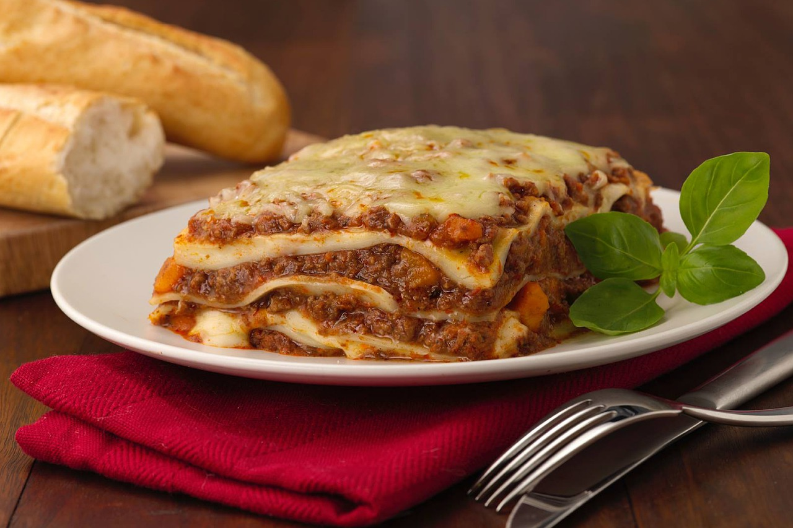

Receita culinária
Lasanha
Hoje você vai aprender a fazer uma maravilhosa receita de lasanha fácil e rápida! A receita da lasanha à bolonhesa tradicional de um jeito bem simples de fazer. Até quem não tem muita prática na cozinha vai conseguir fazer essa delícia.
Então prepara os ingredientes aí e mãos à obra:
Ingredientes
- Meio-quilo de carne moída
- 250 gramas de presunto fatiado
- 250 gramas de mussarela fatiada
- 1 lata de massa de tomate pronta
- 1 pacote de lasanha pré cozida de 200 gramas
- 2 cubos de caldo de carne
- 2 dentes de alho amassados
- 1 cebola pequena picada
- Salsinha, cebolinha e orégano a gosto
- Azeite para refogar
Preparo
- Primeiro, em uma panela você vai aquecer o azeite e refogar a cebola e o alho.
- Junte a carne moída, uma xícara de água e deixe até cozinhar bem
- Coloque a massa de tomate pronta, o orégano e mais ou menos 1 litro de água.
- Deixe uns 10 minutos, mexendo as vezes, e desligue.
- Junte a salsinha e cebolinha e mexa mais
- Agora começa a montagem! Primeiro você vai forrar o fundo de um refratário com um pouco do molho.
- Alterne camadas de massa de lasanha, molho, fatias de presunto, fatias de mussarela.
- A última camada deverá ser a de mussarela.
- Cobra com papel alumínio e leve ao forno por aproximadamente 30 minutos.
- Na dúvida do tempo exato, vá verificando com um garfo se a massa ficou bem molinha e a mussarela completamente derretida.
